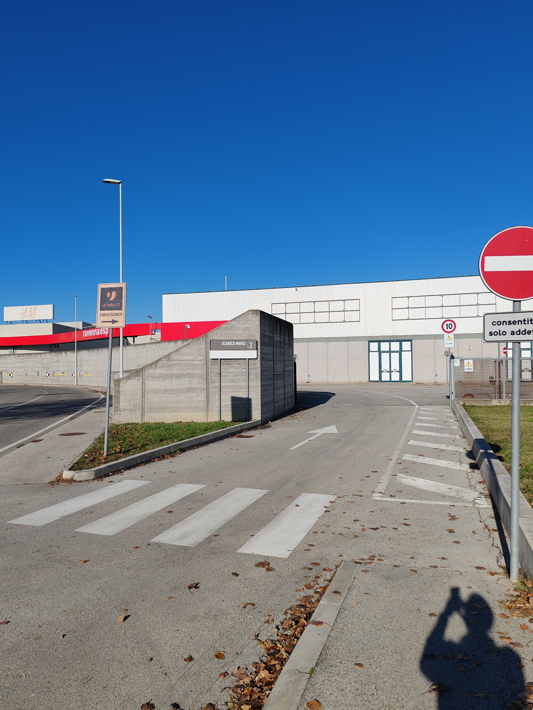
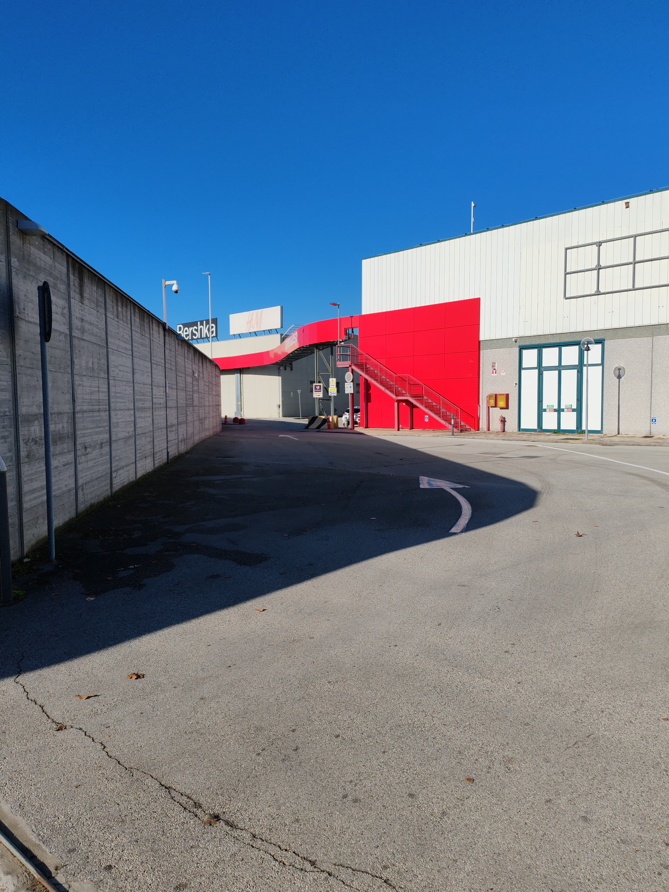
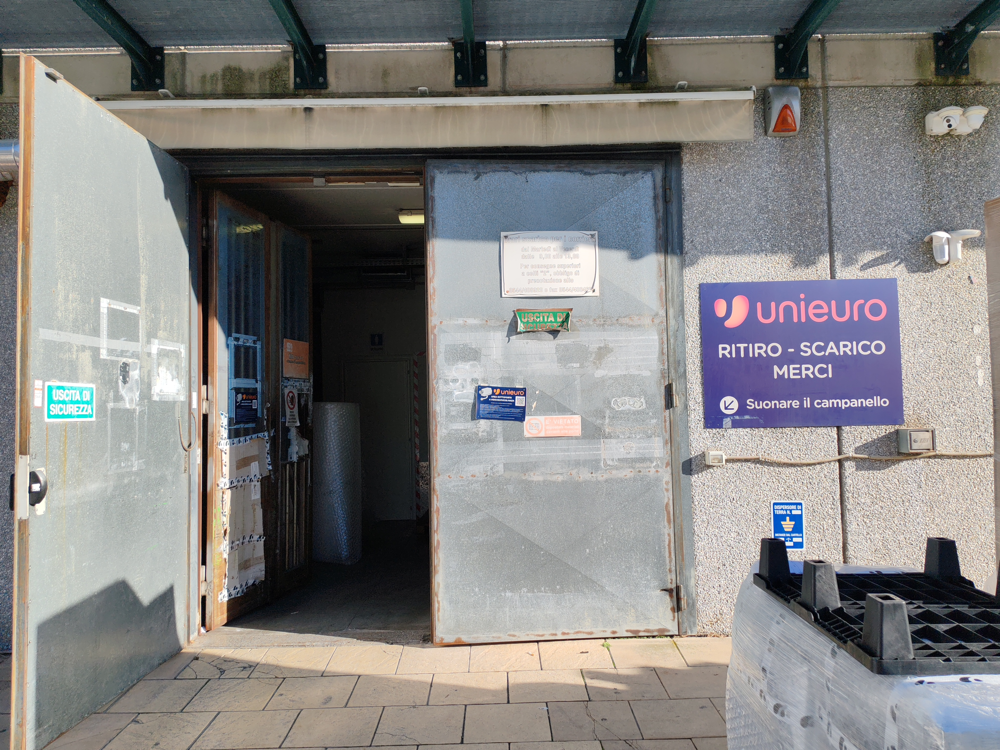

Ritiro Merci Unieuro
Guida rapida per raggiungere il magazzino
Il navigatore ti porterà all'imbocco della corsia interna: da lì segui i 3 passaggi qui sotto.
Nota importante: la corsia finale è una strada interna di servizio con il cartello "Consentito solo addetti". È il passaggio autorizzato per chi ritira merce: prosegui pure fino in fondo.

Passaggio 1 • Dal punto Maps
Imbocca la corsia "Scarico Merci"
Arrivato alle coordinate del navigatore, entra nella corsia laterale seguendo il cartello Unieuro - Scarico Merci e la freccia bianca sull'asfalto, costeggiando il muro in cemento sulla sinistra.

Passaggio 2 • Costeggia lo stabile
Prosegui dritto oltre la scala rossa
Continua lungo il muro in cemento sulla sinistra, supera la scala metallica rossa sulla destra e segui la curva a sinistra costeggiando lo stabile.

Passaggio 3 • Arrivo
Portone Ritiro Merci e campanello
Fermati davanti al portone con l'insegna blu Unieuro - Ritiro / Scarico Merci e suona il campanello sulla destra.
QR Code da stampare per i clienti
Inquadra con la fotocamera per aprire questa guida